Electronic Production
This week I learned about the basic electronic boards production and how to make your circuit board. The goal was to make Fab ISP from by using a milled pcb with the Roland SRM-20 Machine, the design was from Fab Tiny Star.
So the first is we have to download 2 files or Pictures, the Traces which is the path that electricity moves in the circuit and second the Outline which is outside boarder that is need to cut pcb boarders so we can take it out. We are going to be using two drill bits one is 1/64 in and the other 1/32, so we must be careful with them especially the 1/64 is very fragile.
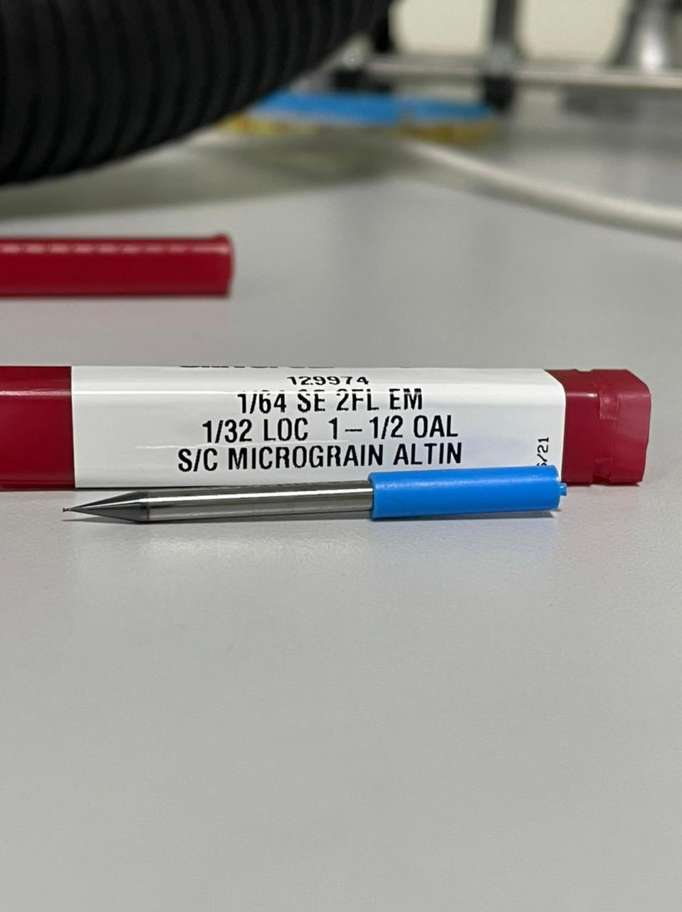
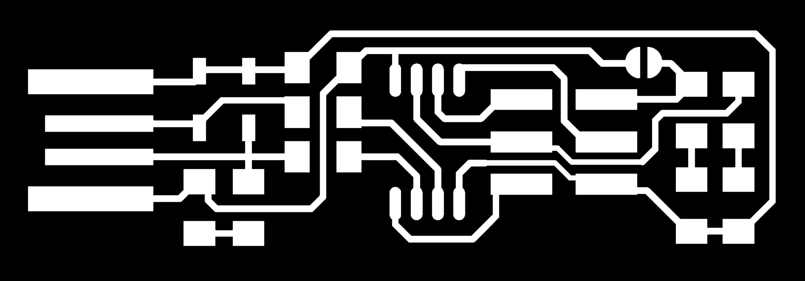
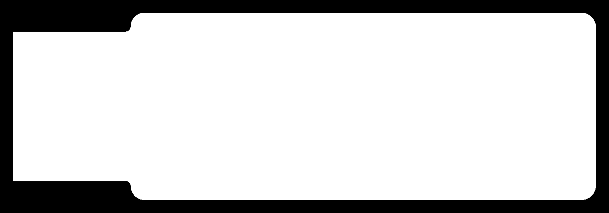
So the next step is to transfer those files to Fab Modules which is a web-based tool used to transfer these images into coordinates that the machine can understand. After that you can save output files from the webtool into a usb and plug it in the Roland SRM-20 Machine.
1. Input format -> Image(png)
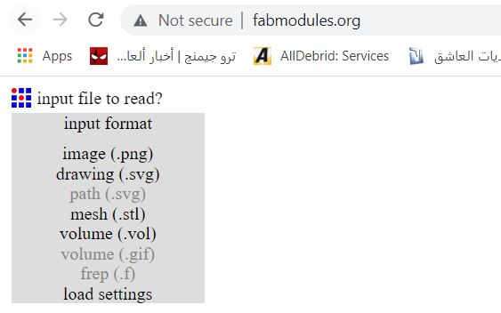2. Output format -> Roland Mill(.rml)
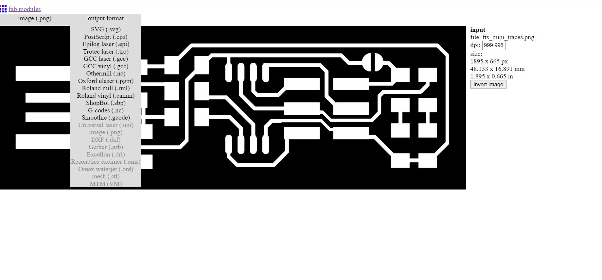3. Process -> PCB traces (1/64)
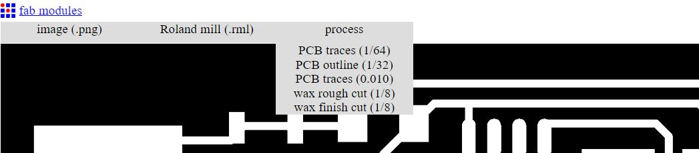4. Make sure to put machine to SRM-20 and set x0,y0,z0 all to zero as that is important to set machine axis as an origin point which will be modified later.
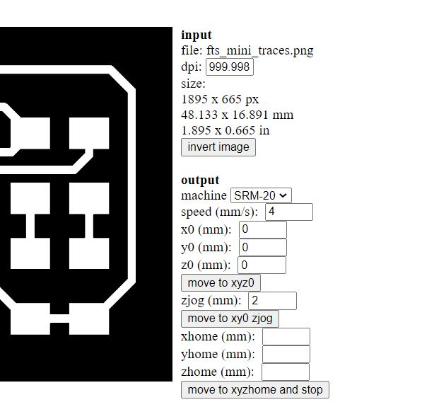5. Hit calculate and wait for the web-tool to finish and then save the files
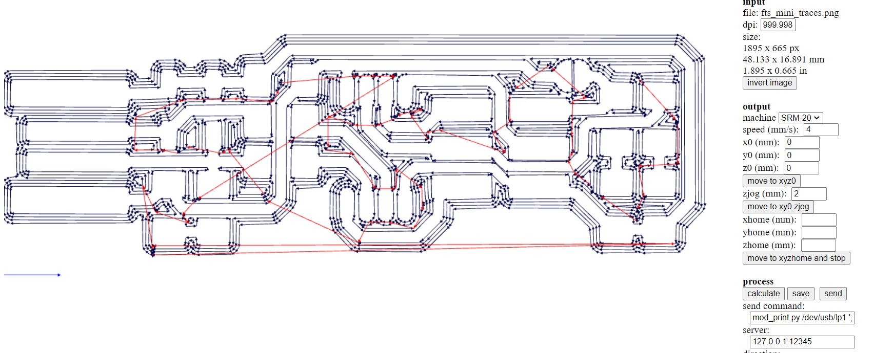6. Next is the same but for the other image the outside border. Input format -> Image(png)
7. Output format -> Roland Mill(.rml)
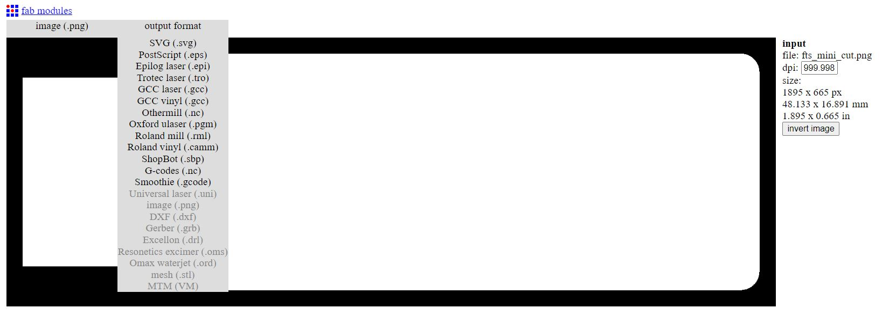8. Process -> PCB outline
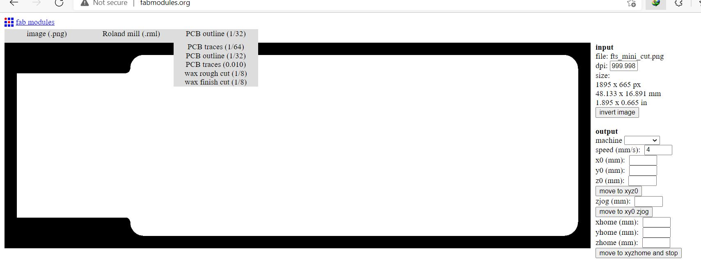9. Also the same step for the second cut, make sure to put machine to SRM-20 and set x0,y0,z0 all to zero.
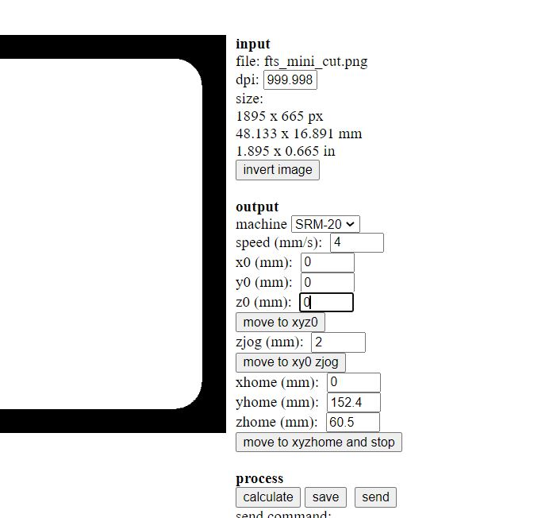10. Hit calculate and wait for the web-tool to finish and then save the files
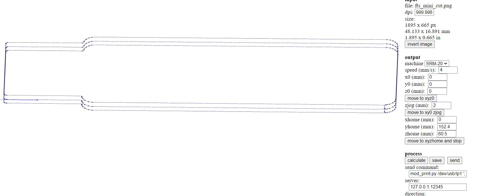
Next Part is that we had to go to the machine and start it. Before we start drilling there is some calibration needed.
1. Make sure the stock (copper piece) is tightened to platform
2. Choose enough material area for the part
3. Put the drill bit on the spindle and tightened
4. When you see that you have a good material area, Zero the X,Y-axis on the machine, this makes current point of the spindle is the new Origin
5. using the controls on the machine decrease the Z-axis until the bit almost touches the copper piece
6. Unscrew the drill bit while pressing it down gently on the platform and the screw it back then Zero the Z-axis
7. Return to origin for the X,Y and Z and start milling
Here is the Milling Process for the Traces
Milling process for the Outline
And here is the finished Product after Milling.
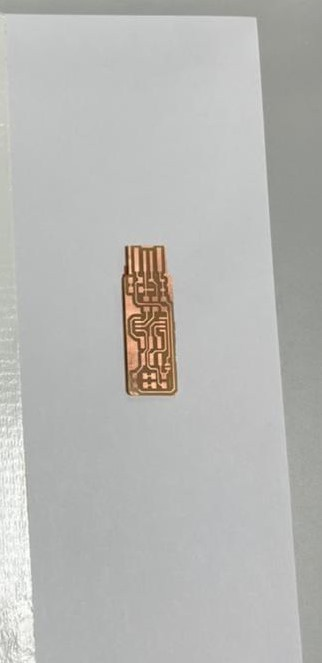Assembling ISP
Now after I Finished the Milling its time gather the components and start Soldering, I have tried soldering before but not on this small scale so when I started soldering, I started with the Atiny45 chip which has 8 legs, the mistake I did was applied solder wire to all of the legs which wrong, so with the help of engineer Hashim, he helped me remove the chip by de-soldering using the hot gun and do it again. The second time I made sure to add Solder wire in small amounts to get used to it then continued with soldering other components.
Getting the components:
1. 1x ATtiny45
2. 2x 1kΩ resistors
3. 2x 499Ω resistors
4. 2x 49Ω resistors
5. 2x 3.3v zener diodes
6. 1x red LED
7. 1x green LED
8. 1x 100nF capacitor
9. 1x 2x3 pin header

Soldering the components according to the schematics below, note that some components have to be soldered in a specific orientation, you can see on the schematic for example U1 has a dot in its left bottom corner, it indicates the direction, also the Zener diodes D1,D2 have lines on them to indicate their orientation, as well as LED’s you have to solder them regarding to where is the direction their grounded to, that can be checked by using the multimeter on continuity mode.
Here is the ISP after soldering the components
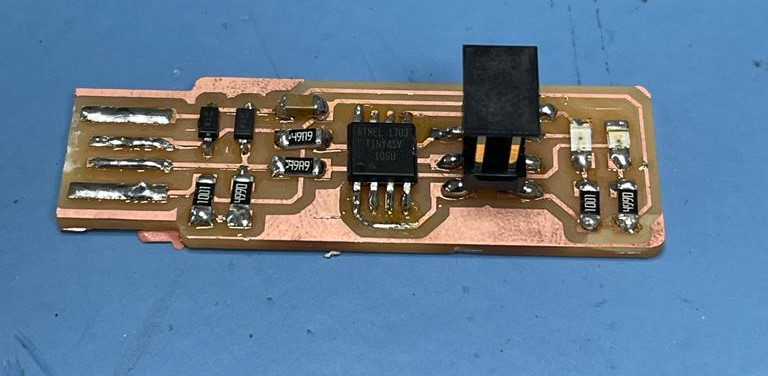The Final Part, which is programming the ISP board, but before starting programming there is an important step which is to check for short circuits tests using the multimeter on the Continuity mode
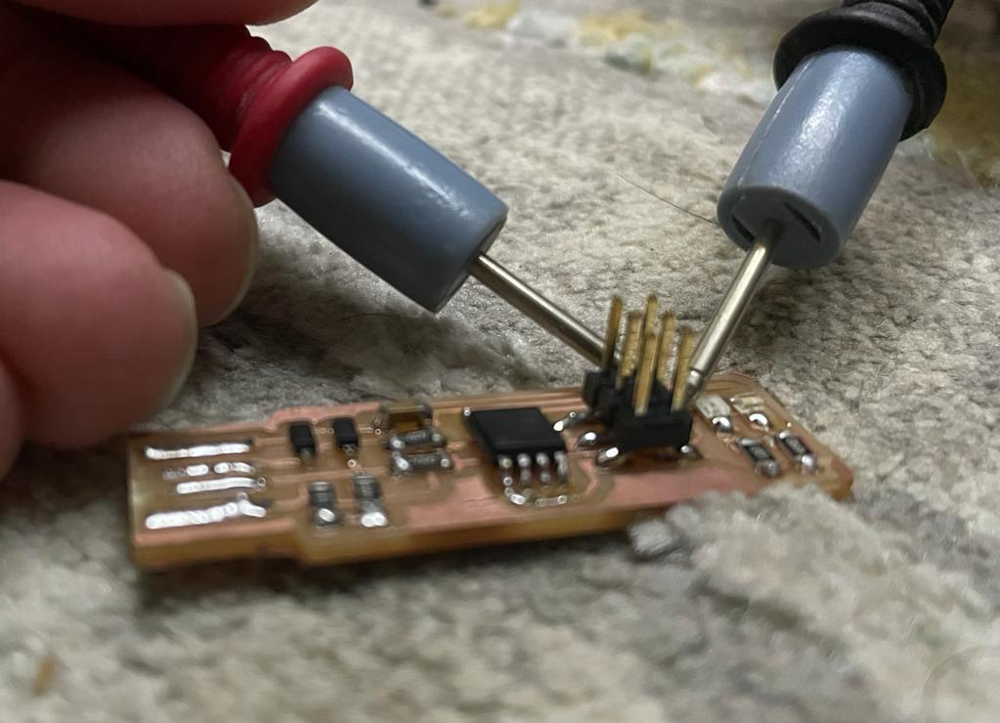
Now to start programming the ISP there are some files that need to be downloaded, also I followed Maha’s great documentation on this, so here are the files that need to be downloaded
1. WinAVR 20100110
2. Zadig
3. FTS firmware
4. Download AVRdude gnu files Choose version 6.3.2016
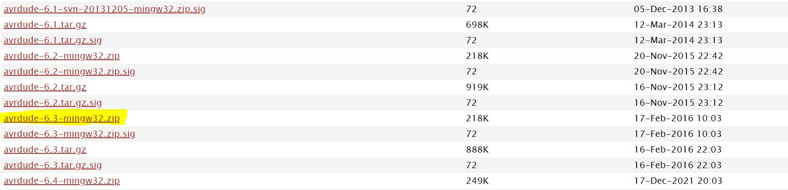
After downloading the files now its time to install the files.
1. Install WinAVR 20100110
2. Navigate to your WinAVR installed folder -> bin and delete these two files, avrdude.conf and avrdude.
3. Replace the removed files from the downloaded AVRdude gnu files
4. Go to control panel > systems > advanced system settings > environmental variables > path > edit > delete the old AVR path(if found)or add the new path to the bin (../WinAvr/bin).
5. Go to FTS firmware folder and open the git bash there and run these commands separately
6. “make -v”
7. “Avr-gcc –version”
8. avrdude -c usbtiny -p t45
“make -v"
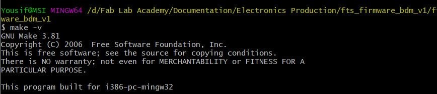“avr-gcc –version”
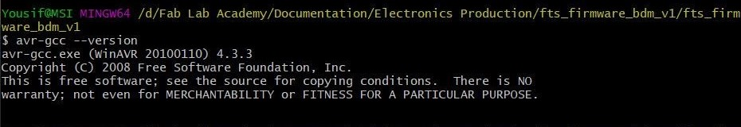8. “avrdude -c usbtiny -p t45”
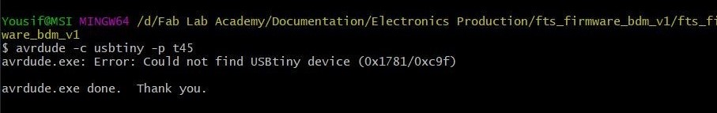9. connect a fully programmed ISP with your unprogrammed ISP together through a six-pin connector with wires. (note that its important for the wires to have some orientation when you connect the ISP’s together)
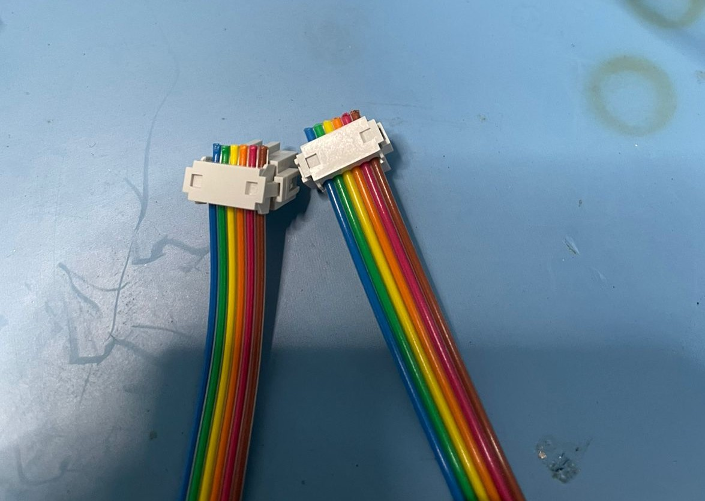10. Plug the Fully programmed ISP into your PC and Run Zadig
11. In Zadig make sure that you can see the USBtinySPI and choose “libsub-win32 (v1.2.6.0)” and install the driver
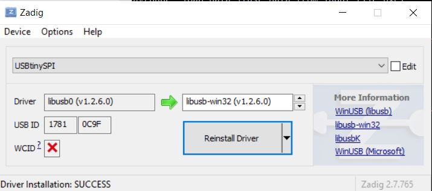12. Go back to git bash in the FTS Firmware directory and write “make” command
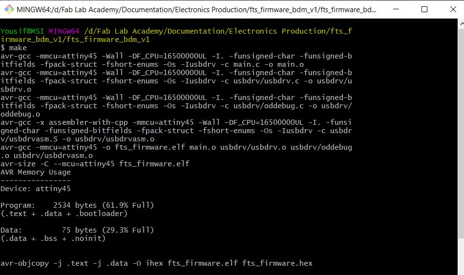13. Run “make flash” command
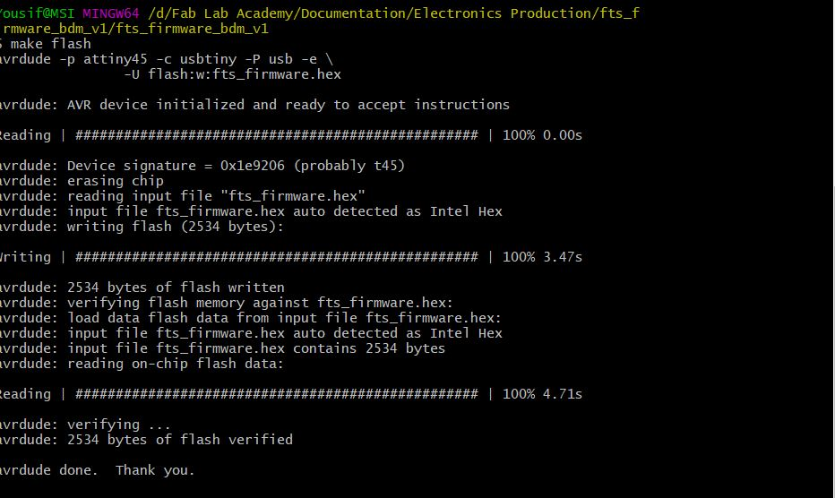14. Run “make fuses”
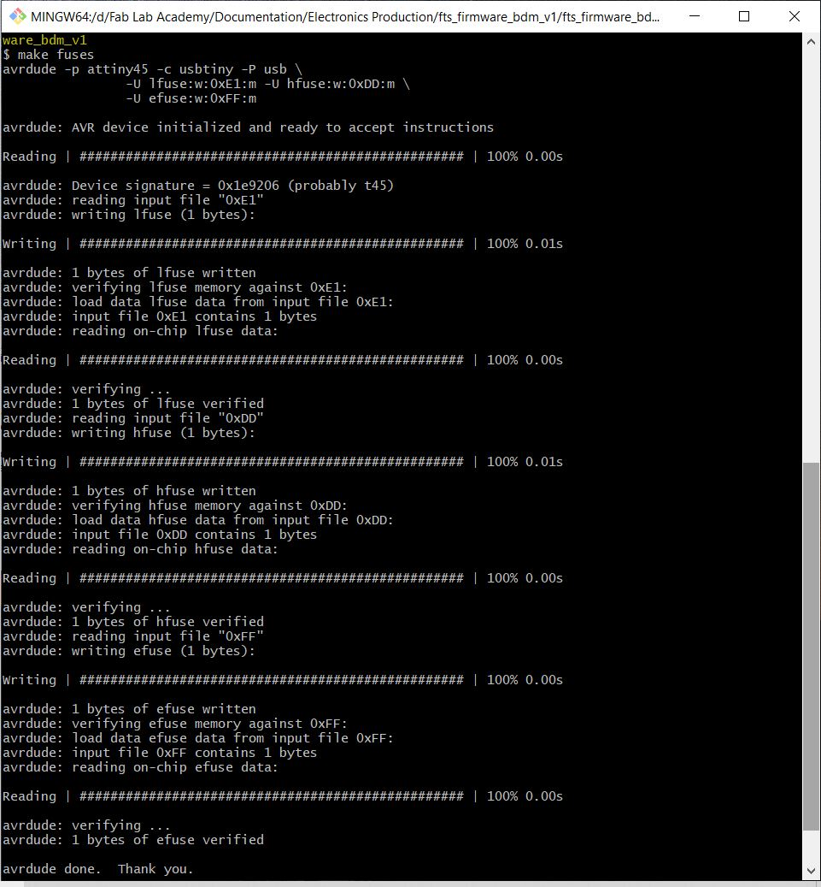15. Run “make rstdisbl”
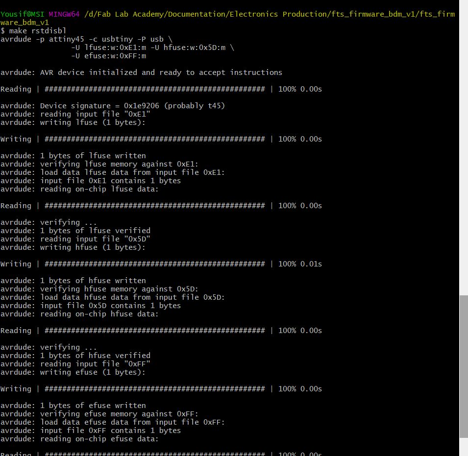16. Last step is to check if your ISP(unprogrammed-previously) is working disconnect the ISP’s and plug your ISP into PC and Open device manager and you will see it, also try giving it to a colleague have them perform the same process to program their own to make sure it’s working successfully.
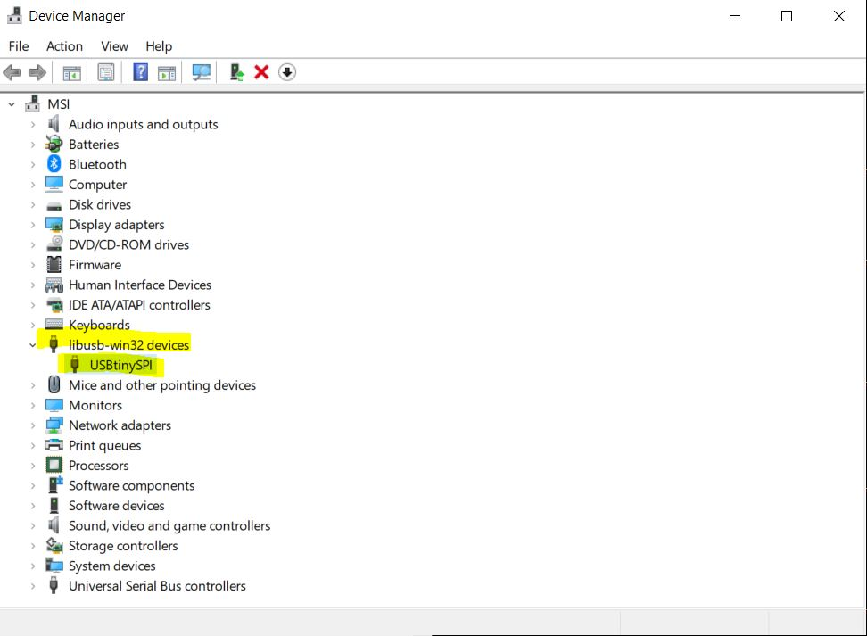....